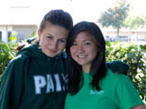
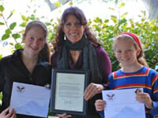
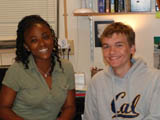
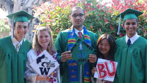

|
||
|
The Slice | MARCH / APRIL 2012
Tackling High School, Getting Ready for College or Career
The structure of American school systems is such that the pains of adolescence coincide with entrance into new physical, social, and pedagogical environments that mark teenagers’ transition to high school. (Schiller, 1999) Gunn Principal Katya Villalobos knows that families and incoming students may see high school as this “big and scary place.” That’s why she and her administrative team developed Titan 101 this year; a PiE-funded program designed specifically to ease entry into the high school community. In this program, incoming students are paired with seasoned ones, who answer questions, show them where to get information, and advise them on everything from managing stress to explaining how the tutorial period works Paly Principal Phil Winston agrees that implementation of a transition program (at Paly, it’s the PiE-funded Link Crew program) makes a big difference for incoming freshman. And it has the added benefit of encouraging more experienced students to develop leadership and mentoring skills. Winston and Villalobos came up with their top five tips for easing the stress of the high school transition: Middle to High School Transition Tips
“This is a time when students start stretching their wings,” Villalobos says. “It makes me happy to see them finding their passion.” Studies have found that students look forward to making new friends, having more freedom, and attending school events as they transition to high school. Their biggest concerns: The amount of homework, class difficulty, and organizational issues such as getting lost. Parents are most concerned their children will feel negative peer pressure in both academic and social realms. Teachers’ top concerns are that students will feel pressure to do well in class, that they will experience challenging courses, and may have difficulty making new friends. (Akos and Galassi, 2004) Both Winston and Villalobos are continually looking for new ways to support incoming students as they become more comfortable on the larger campus. They both remind students to breathe, connect with others, and do their best to find balance between homework load, extracurricular activities, hobbies, and family time. As high school progresses, teenagers become more independent and experience less parental involvement in their schooling. Parents are also learning to find a healthy balance of both freedom and responsibilities. Both Gunn and Paly have Guidance models and Career and College Counselors, funded in part with PiE dollars, to support students (and families) as they move through high school and prepare for post-secondary life. As students prepare to leave high school, Villalobos and Winston share their top five tips for seniors: High School Graduation Transition Tips
|

|
|
|
pausd.org | site map |
© 2011, Partners in Education | EIN (Tax ID#): 77-0186364 | tel: 650.329.3990 | fax: 650.329.3723 |